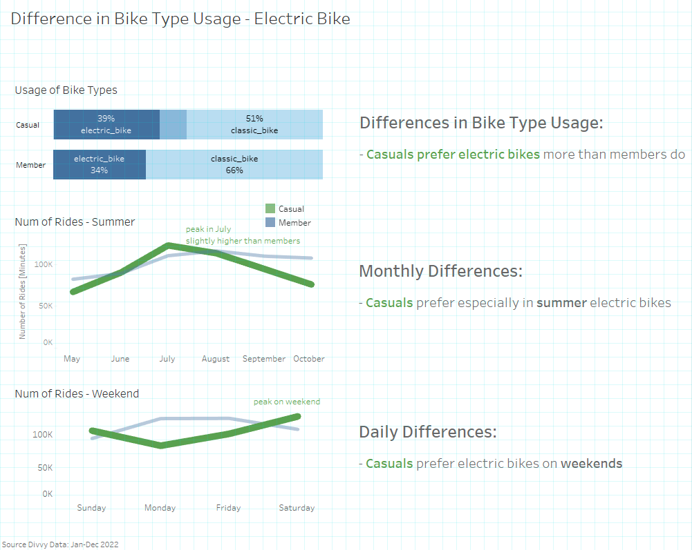

Case Study in SQL: How Does a Bike-Share Navigate Speedy Success
Hartmut Schaefer
II. Data Cleaning in SQL
Pre-requisites
In this RMarkdown file the SQL code for data cleaning is documented.
The SQL tool used for this case study is Microsoft SQL Server Management
Studio v.18.12.1. This RMarkdown file is setup to connect to my
localhost SQL Server. All SQL code chunks will be then executable.
Install and load packages:
Install packages “ODBC” and “DBI” for database communication:
library(odbc)
library(DBI)
library(tidyverse)
Connect to SQL Server:
con <- dbConnect(odbc(), Driver = "SQL Server",
server = "localhost\\SQLEXPRESS",
Database = "Cyclistic_2022",
Trusted_Connection = "True")
1. Importing raw data
1.1 Importing data
Datasets
The following datasets were used:Link for
dataset download:
Data set: ‘202201-divvy-tripdata.csv’ (data for one month
Jan. 2022)
Data set: ‘202202-divvy-tripdata.csv’ (data for one month
Feb. 2022)
Data set: ‘202203-divvy-tripdata.csv’ (data for one month
Mar. 2022)
Data set: ‘202204-divvy-tripdata.csv’ (data for one month
Apr. 2022)
Data set: ‘202205-divvy-tripdata.csv’ (data for one month May.
2022)
Data set: ‘202206-divvy-tripdata.csv’ (data for one month
Jun. 2022)
Data set: ‘202207-divvy-tripdata.csv’ (data for one month
Jul. 2022)
Data set: ‘202208-divvy-tripdata.csv’ (data for one month
Aug. 2022)
Data set: ‘202209-divvy-tripdata.csv’ (data for one month
Sep. 2022)
Data set: ‘202210-divvy-tripdata.csv’ (data for one month
Oct. 2022)
Data set: ‘202211-divvy-tripdata.csv’ (data for one month
Nov. 2022)
Data set: ‘202212-divvy-tripdata.csv’ (data for one month
Dec. 2022)
All CSV raw data files were imported manually to the SQL Server. In
order to account for the correct datetime setting
follow these steps:
- First, before the data import the PC/Mac System Clock must be
changed to “Central Standard Time (Chicago)”. In this way the datetime
variables in the datasets are assigned to the local time zone
- Second, during the import the datetime format must be changed to
“datetimeoffset(7)”. In this way the local daylight saving time offset
will be registered correctly.
1.2 Union data
--------------------------------- SQL: Union all tables and store into new table
select * into tblAllTripsRaw
from [dbo].[202201-divvy-tripdata]
union all
select * from [dbo].[202202-divvy-tripdata]
union all
select * from [dbo].[202203-divvy-tripdata]
union all
select * from [dbo].[202204-divvy-tripdata]
union all
select * from [dbo].[202205-divvy-tripdata]
union all
select * from [dbo].[202206-divvy-tripdata]
union all
select * from [dbo].[202207-divvy-tripdata]
union all
select * from [dbo].[202208-divvy-tripdata]
union all
select * from [dbo].[202209-divvy-tripdata]
union all
select * from [dbo].[202210-divvy-tripdata]
union all
select * from [dbo].[202211-divvy-tripdata]
union all
select * from [dbo].[202212-divvy-tripdata]## number_of_rows
## 1 5667717
Result:
- Numbers of rows: 5,667,717
- Numbers of columns: 13
Column names:
- ride_id (nvarchar(50))
- rideable_type (nvarchar(50))
- started_at (datetimeoffset(7))
- ended_at (datetimeoffset(7))
- start_station_name (nvarchar(max))
- start_station_id (nvarchar(50))
- end_station_name (nvarchar(max))
- end_station_id (nvarchar(50))
- start_lat (float)
- start_lng (float)
- end_lat (float)
- end_lng (float)
- member_casual (nvarchar(50))
2. Cleaning the data
2.1 Remove NULLs
There are plenty of rows with missing values, related to missing
recordings of start and end stations. All rows with NULLs will be
removed.
---------------------------------------------------------- SQL: Delete NULL rows
delete from [dbo].[tblAllTripsRaw]
where
ride_id IS NULL or
[rideable_type] IS NULL or
[started_at] IS NULL or
[ended_at] IS NULL or
[start_station_name] IS NULL or
[start_station_id] IS NULL or
[end_station_name] IS NULL or
[end_station_id] IS NULL or
[start_lat] IS NULL or
[start_lng] IS NULL or
[end_lat] IS NULL or
[end_lng] IS NULL or
[member_casual] IS NULL## number_of_rows
## 1 4369360
Result:
- Number of rows removed (with NULLs): 1,298,357 (23%)
- Number of rows remaining (no NULLs): 4,369,360
2.2 Remove service stations:
Service stations for maintenance or charging tests should be removed
from the dataset.
We identified the following service station names:
- station IDs with name “Pawel Bialowas - Test- PBSC charging
station”
- station IDs with name “DIVVY CASSETTE REPAIR MOBILE STATION”
- station IDs with name “Hubbard Bike-checking (LBS-WH-TEST)”
- station IDs with name “DIVVY 001 - Warehouse test station”
- station IDs with name “2059 Hastings Warehouse Station”
- station IDs with name “Divvy Valet - Oakwood Beach”
- station IDs with name “Hastings WH 2”
-- ---------------------------------------SQL: delete rows with service stations
delete from [dbo].[tblAllTripsRaw]
where
start_station_id like '%Pawel Bialowas%' or
start_station_id like '%DIVVY CASSETTE%' or
start_station_id like '%Hubbard%' or
start_station_id like '%DIVVY 001%' or
start_station_id like '%2059 Hastings%' or
start_station_id like '%Divvy Valet%' or
start_station_id like '%Hastings WH%' or
end_station_id like '%Pawel Bialowas%' or
end_station_id like '%DIVVY CASSETTE%' or
end_station_id like '%Hubbard%' or
end_station_id like '%DIVVY 001%' or
end_station_id like '%2059 Hastings%' or
end_station_id like '%Divvy Valet%' or
end_station_id like '%Hastings WH%'## number_of_rows
## 1 4367853
Result:
- Removed number of rows with service stations: 1,507
- Remaining number of rows: 4,367,853
2.3 Remove location outlieres
In the “Case study project with R” we identified stations outside of Greater Chicago Area. We will use here the same city boundaries:
----------------------------------- SQL: Delete stations outside of Chicago area
delete from [dbo].[tblAllTripsRaw]
where
start_lat < 41.4 or start_lat > 42.4 or
end_lat < 41.4 or end_lat > 42.4 or
start_lng < -88 or start_lng > -87 or
end_lng < -88 or end_lng > -87## number_of_rows
## 1 4367845
Result:
- Removed number of rows: 8
- Remaining number of rows: 4,367,845
2.4 Handling dates
Since all time-stamps are registered with the local time offset (see
data import, chapter 1.1), rides originated before a DST-change
(daylight saving time) and ended after the DST-change will be
automatically corrected by the function DATEDIFF().
However, regarding time-stamps originated or ended in the DST-change
slot (spring and fall), we have to look into the numbers and check for
ambiguities
2.4.1 Spring: Advancing clock - time gap
In spring on 2022-03-13 02:00:00 the time was advanced by 1 hour.
Times between 02:00:00 - 02:59:59 are not recorded
(i.e. 01:59:59 -6:00 + 1 sec =
03:00:00 -5:00). There are no ambiguities, and no rows have
to be removed.
2.4.2 Fall: Returning clock - time lap
In autumn on 2022-11-06 02:00:00 the time was returned by 1 hour. The
time-stamps in the dataset of 2022-11-06 between 01:00:00 and 01:59:59
are registered as post-DST (i.e. offset = -6:00). But many data points
belong to the pre-DST (i.e. offset = -5:00).
Thus we cannot determine whether the time stamp belongs to the first
path (before DST switch) or the second path (after DST switch).
Therefore, we will remove all time stamps originated or ended between
1am to 2am.
----------- SQL: Remove all rows with start/end time in lap (2022-11-06 1am-2am)
delete from [dbo].[tblAllTripsRaw]
where
started_at between '2022-11-06 01:00:00 -05:00' and '2022-11-06 02:00:00 -06:00' or
ended_at between '2022-11-06 01:00:00 -05:00' and '2022-11-06 02:00:00 -06:00'## remaining_number_of_rows
## 1 4367504
Result:
- Removed number of rows: 341
- Remaining number of rows: 4,367,504
2.4.3 Removing rows with time conflict: start-time after end-time
There are some rides where the end time is before the start time. Most of these rides originated and ended at charging stations. The wrong recording may be due to testing or other failures. These rows will be removed.
-------------------------------------------- SQL: Delete rows with time conflict
delete from [dbo].[tblAllTripsRaw]
where started_at > ended_at## number_of_rows
## 1 4367467
Result:
- Removed number of rows: 37
- Remaining number of rows: 4,367,467
2.5 Transform data
2.5.1 Add calculated variables for duration, weekdays, and hours
For further analysis we will now calculate the ride duration in
minutes and extract date, weekday name and hour from start time.
-------------------------------------------- SQL: Calculate additional variables
select *,
round(cast(DATEDIFF(second, started_at, ended_at) as float)/60,2) as duration_minutes,
cast(started_at as date) as date_start,
datename(weekday, started_at) as weekday_name,
datepart(hh, started_at) as hour_start
into tblAllTripsTrans
from [dbo].[tblAllTripsRaw]----------------------------------------------------- SQL: Get number of columns
select count(*) as number_of_columns
from INFORMATION_SCHEMA.COLUMNS
where TABLE_CATALOG = 'Cyclistic_2022'
and TABLE_NAME = 'tblAllTripsTrans'## number_of_columns
## 1 17
Result:
- Number of columns added: 4
- Total number of columns: 17
Column names (added):
- duration_minutes (float)
- date_start (date)
- weekday_name (nvarchar(30))
- hour_start(int)
2.6 Remove outliers
We will use the result from the “Case study project in R” document,
where we explored the boundaries for outliers. The boundaries for
outliers were set to:
- lower boundary: 1 min
- upper boundary: 1500 min (about 24h)
--------------------------------------------- SQL: Remove outliers from duration
delete from [dbo].[tblAllTripsTrans]
where duration_minutes < 1 or duration_minutes > 1500## number_of_rows
## 1 4290992
Result:
- Removed number of rows: 76,475
- Remaining number of rows: 4,290,992
2.7 Remove duplicate rows
In the last step, we will remove remaining duplicate rows. The
variable ride_id is a unique identifier even for duplicate
rows. Therefore, we will exclude this variable in the duplicate
detection code. The code can be best formulated as CTE (Common Table
Expression).
--------------------------------------------------------- SQL: Remove duplicates
with cteNoDuplicates as(
select *,
row_number() over(partition by
[rideable_type]
,[started_at]
,[ended_at]
,[start_station_name]
,[start_station_id]
,[end_station_name]
,[end_station_id]
,[start_lat]
,[start_lng]
,[end_lat]
,[end_lng]
,[member_casual]
order by ride_id) row_num
from tblAllTripsTrans
)
select [ride_id]
,[rideable_type]
,[started_at]
,[ended_at]
,[start_station_name]
,[start_station_id]
,[end_station_name]
,[end_station_id]
,[start_lat]
,[start_lng]
,[end_lat]
,[end_lng]
,[member_casual]
,duration_minutes
,date_start
,weekday_name
,hour_start
into tblAllTripsFinal
from cteNoDuplicates
where row_num <= 1## number_of_rows
## 1 4290971
Result:
- Removed number of rows: 21
- Remaining number of rows: 4,290,971
3. All in one
In a more elegant form we will combine all steps as a sequence of multiple CTEs (Common Table Expressions). In this way we don’t have to send queries multiple times to the server.
-- #############################################################################
-- Case study: Cyclistic - Google Data Analytics Specialization Course
-- Author: H. Schaefer,
-- Date: 2023-03-20 (vers 2)
-- Dense SQL code for data union, cleaning and calculation (
-- #############################################################################
------------------------------------------------------------- 0. Union all files
with
cteUnionAllFiles as(
--select * from [dbo].[202111-divvy-tripdata]
--union all
--select * from [dbo].[202112-divvy-tripdata]
--union all
select * from [dbo].[202201-divvy-tripdata]
union all
select * from [dbo].[202202-divvy-tripdata]
union all
select * from [dbo].[202203-divvy-tripdata]
union all
select * from [dbo].[202204-divvy-tripdata]
union all
select * from [dbo].[202205-divvy-tripdata]
union all
select * from [dbo].[202206-divvy-tripdata]
union all
select * from [dbo].[202207-divvy-tripdata]
union all
select * from [dbo].[202208-divvy-tripdata]
union all
select * from [dbo].[202209-divvy-tripdata]
union all
select * from [dbo].[202210-divvy-tripdata]
union all
select * from [dbo].[202211-divvy-tripdata]
union all
select * from [dbo].[202212-divvy-tripdata]
),
--select count(*) as num_rows from cteUnionAllFiles
------------------------------------------------------ 1. Remove rows with NULLs
cteNotNull as(
select * from cteUnionAllFiles
where [ride_id] IS NOT NULL and
[rideable_type] IS NOT NULL and
[started_at] IS NOT NULL and
[ended_at] IS NOT NULL and
[start_station_name] IS NOT NULL and
[start_station_id] IS NOT NULL and
[end_station_name] IS NOT NULL and
[end_station_id] IS NOT NULL and
[start_lat] IS NOT NULL and
[start_lng] IS NOT NULL and
[end_lat] IS NOT NULL and
[end_lng] IS NOT NULL and
[member_casual] IS NOT NULL
),
--select count(*) as num_rows from cteNotNull
---------------------------------------- 2. Remove rows with maintenace stations
cteNoMaintenanceStation as(
select *
from cteNotNull
where
start_station_id not like '%Pawel Bialowas%' and
start_station_id not like '%DIVVY CASSETTE%' and
start_station_id not like '%Hubbard%' and
start_station_id not like '%DIVVY 001%' and
start_station_id not like '%2059 Hastings%' and
start_station_id not like '%Divvy Valet%' and
start_station_id not like '%Hastings WH%' and
end_station_id not like '%Pawel Bialowas%' and
end_station_id not like '%DIVVY CASSETTE%' and
end_station_id not like '%Hubbard%' and
end_station_id not like '%DIVVY 001%' and
end_station_id not like '%2059 Hastings%' and
end_station_id not like '%Divvy Valet%' and
end_station_id not like '%Hastings WH%'
),
--select count(*) as num_rows from cteNoMaintenanceStation
------------------------------------------------- 3. Geo-code outlier (location)
cteNoLocationOutlier as(
select *
from cteNoMaintenanceStation
where
start_lat >= 41.4 and start_lat <= 42.4 and
end_lat >= 41.4 and end_lat <= 42.4 and
start_lng >= -88 and start_lng <= -87 and
end_lng >= -88 and end_lng <= -87
),
--select count(*) as num_rows from cteNoLocationOutlier
-------------------------------- 4. Daylight Saving Time - Fall returning clock
-------------------------------------------remove ambiguities 2022-11-06 1am-2am
cteNoDstAmbiguities as(
select *
from cteNoLocationOutlier
where started_at
not between '2022-11-06 01:00:00 -05:00' and '2022-11-06 02:00:00 -06:00' and
ended_at not between '2022-11-06 01:00:00 -05:00' and '2022-11-06 02:00:00 -06:00'
),
--select count(*) as num_rows from cteNoDstAmbiguities
--------------------------------------------------------------- 5. Time conflict
cteNoTimeConflict as(
select *
from cteNoDstAmbiguities
where started_at <= ended_at
),
--select count(*) as num_rows from cteNoTimeConflict
------------------------------------------------ 6. calculate additional columns
cteAddCalculatedColumns as(
select *,
round(cast(DATEDIFF(second, started_at, ended_at) as float)/60,2) as duration_minutes,
cast(started_at as date) as date_start,
datename(weekday, started_at) as weekday_name,
datepart(hh, started_at) as hour_start
from cteNoTimeConflict
),
--select top 10 * from cteAddCalculatedColumns
------------------------------------------------------------- 7. Remove outliers
-----------------------(ride durations <1min or >1500min (24h+) will be removed)
cteRemoveDurationOutliers as(
select *
from cteAddCalculatedColumns
where duration_minutes >= 1 and
duration_minutes <= 1500
),
--select count(*) as num_rows from cteRemoveDurationOutliers
----------------------------------------------------------- 8. Remove duplicates
cteNoDuplicates as(
select *,
row_number() over(partition by
[rideable_type]
,[started_at]
,[ended_at]
,[start_station_name]
,[start_station_id]
,[end_station_name]
,[end_station_id]
,[start_lat]
,[start_lng]
,[end_lat]
,[end_lng]
,[member_casual]
order by ride_id) row_num
from cteRemoveDurationOutliers
)
select [ride_id]
,[rideable_type]
,[started_at]
,[ended_at]
,[start_station_name]
,[start_station_id]
,[end_station_name]
,[end_station_id]
,[start_lat]
,[start_lng]
,[end_lat]
,[end_lng]
,[member_casual]
,duration_minutes
,date_start
,weekday_name
,hour_start
into tblAllTripsFinal
from cteNoDuplicates
where row_num <= 1## number_of_rows
## 1 4290971
Result:
- Removed number of rows: 1,376,746
- Remaining number of rows: 4,290,971
4. Prepare data for Tableau
Finally, we will prepare the data for the further analysis in Tableau by removing non-essential variables and adjust the data type format from “nvarchar(max)” to “nvarchar(100)”
-------------------------------------------------- SQL: Prepare data for Tableau
select [rideable_type]
,cast([start_station_name] as nvarchar(100)) as start_station_name
,[start_station_id]
,[start_lat]
,[start_lng]
,[member_casual]
,duration_minutes
,date_start
,weekday_name
,hour_start
into tblAllTripsFinalDense
from tblAllTripsFinal## number_of_columns
## 1 10
Result:
- Number of columns removed: 7
- Remaining number of columns: 10
Column names (for Tableau):
- rideable_type (nvarchar(50))
- start_station_name (nvarchar(100))
- start_station_id (nvarchar(50))
- start_lat (float)
- start_lng (float)
- member_casual (nvarchar(50))
- duration_minutes (float)
- date_start (date)
- weekday_name (nvarchar(30))
- hour_start(int)
III. Analysis in Tableau
The
presentation with interactive dashboards can be found here
5. Data analysis and visualization
5.1 Key values
5.2 Time dependencies
5.3 Differences by bike-types

5.4 Differences by location
5.5 Answer the question
How do annual members and casual rides use Cyclistic bikes differently?
5.6 Three scenarios
5.7 Dashboards
[For interactivity please visit my webpage of Tableau Public] (https://public.tableau.com/app/profile/hartmut.schaefer/viz/Bike-ShareCaseStudy-GoogleDataAnalyticsCapStoneProject/Cyclistics-StoryPoint)\

Thank you for your interest !